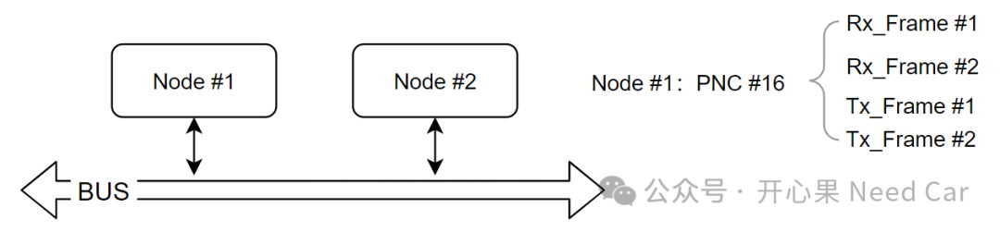
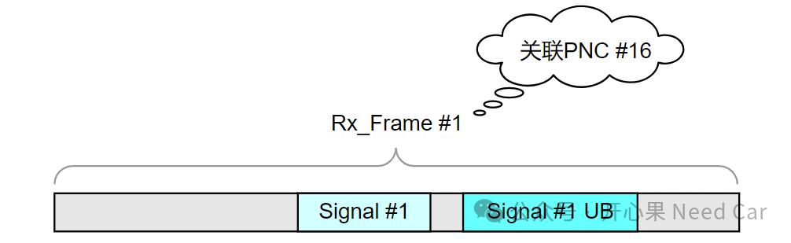
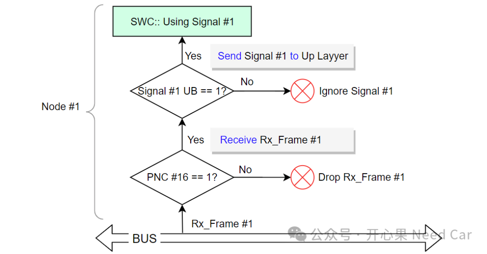

开心果 Need Car · 2024-07-10T06:43:00+08:00 · 微信原文
1、什么是UB
2、什么是PNC
PNC，也就是局部网络簇。它存在的意义在于：节能，即：在某项功能使能时，仅唤醒关联的ECU即可，非关联的ECU不用唤醒，以此达到节能的目的。更多细节可以参考前文《Autosar PN网络管理：PNC信息的收/发流程》、《Autosar网络管理：Partial Network基础 之 ERA/EIRA、PNC Gateway》。
3、PNC、UB与报文的关系


那么，在Node #1接收Rx_Frame #1时，该如何理解接收该帧报文与PNC、UB的层级关系呢？
首先，Node #1接收Rx_Frame #1之前，需要先判断PNC #16是否置位（=1），如果PNC #16置位，表示Rx_Frame #1可以被Node #1接收，否则，不接收。
其次，当Rx_Frame #1被接收以后，需要判断Signal #1 UB是否置位（=1），如果Signal #1 UB置位，表示Signal #1有更新，该信号会传递给上层，供上层使用；如果Signal #1 UB = 0，表示Signal #1没有更新，如果超时，上层可以使用上次接收的值，或者使用默认值。
Node #1接收Signal #1的流程示意如下：

所以，当节点的网络管理属于局部网络管理时，对应的PNC #n有效是处理信号的前提，而信号的更新与否需要判断对应的UB信号。
往期精彩回顾